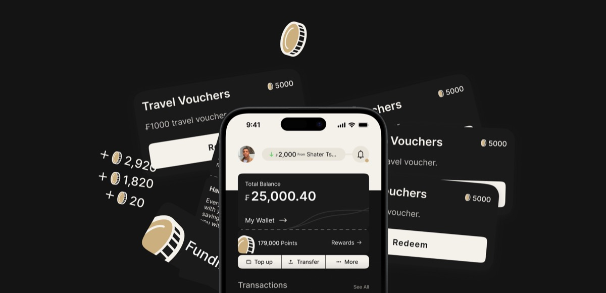
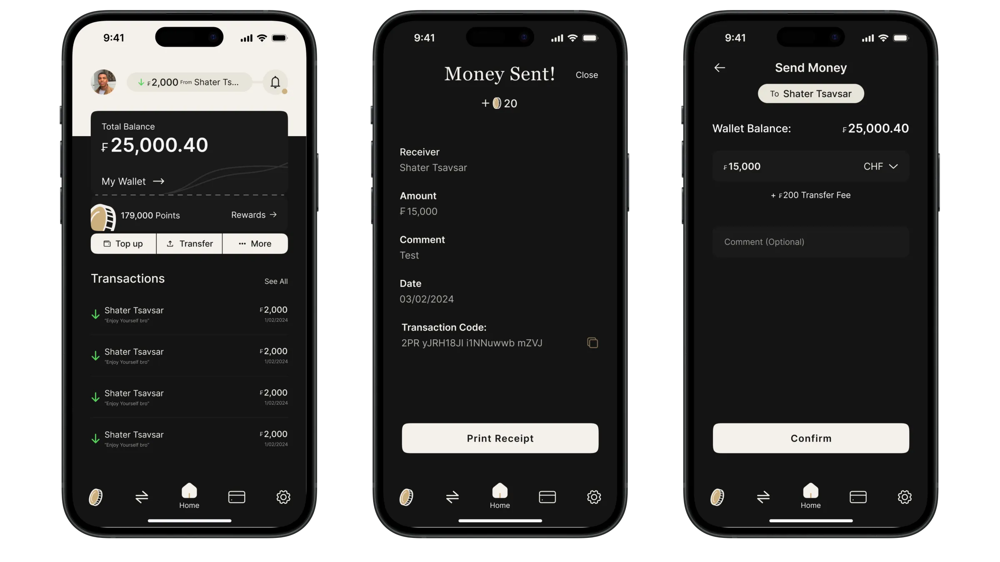
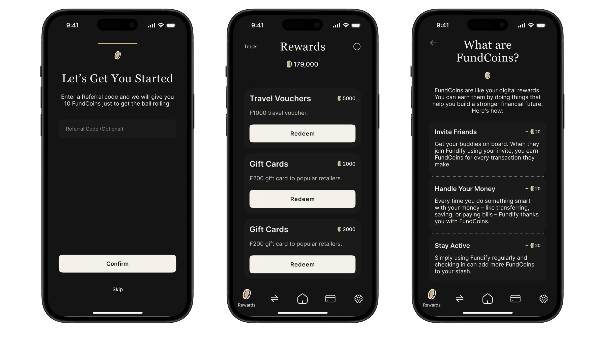

Fundify
Saving money feels like punishment. Fundify flips that, rewarding every good financial move with FundCoins you can actually spend.

Intro
Most people know they should save. They just don’t. The app they downloaded three months ago sits unopened because it made saving feel like a chore.
Fundify is a mobile finance app built on a different premise: money management should feel like progress, not punishment. I designed it to reward the behaviours that actually build financial health, saving, transferring, hitting targets, through a points system called FundCoins.
My role
Solo product designer, end to end.
- Product strategy and concept
- UX and information architecture
- Visual identity and brand
- High-fidelity UI design
- Interaction and motion design
- Rewards system design (FundCoins)
- Prototype and user testing
Problem
Finance apps treat users like they need to be managed. Dashboards full of red numbers, budget warnings, alerts about overspending. The feedback loop is negative by default.
That design reflects a fundamental misread of user behaviour. People disengage when tools make them feel bad. They stay when the tool makes them feel like they’re winning.
The goal was to build the opposite of a budget tracker. Not a tool that catches you failing, a tool that rewards you for doing the right thing.
Design
The visual language is deliberately premium and dark. Black backgrounds, gold tones, clean typography. Finance should feel like it has weight. Most finance apps look like productivity tools. Fundify looks like something you want to open.
The core screens are the wallet (total balance, top up, transfer), the rewards hub (FundCoins points, redemption catalogue), and the activity feed (transactions, milestones). Navigation is minimal. Every tap is intentional.
I also designed Travel Vouchers as one of the first redemption categories, a tangible, high-desire reward that gives users a clear reason to accumulate points.

FundCoins
FundCoins are the engine of the product. Every positive financial action earns points: saving a set amount, completing a transfer, hitting a weekly target. Points accumulate and convert to real rewards.
The design challenge was making FundCoins feel real without feeling gimmicky. The gold coin icon, the points balance displayed prominently, the rewards catalogue with actual items. Each decision pushes it toward something that feels earned rather than cheap.
179,000 points. A user who sees that number doesn’t feel tracked. They feel like they’re getting somewhere.

Lessons
Positive reinforcement is a design tool. It’s more than a UX nicety. It changes the product category. Fundify doesn’t compete with Monzo or Revolut. It competes with the version of those apps people actually open.
The visual identity did more work than I expected. The dark premium aesthetic set expectations before users read a single word. Tone communicates value before content does.
connect
I’m always up for talking to thoughtful people about design systems, interfaces, and the code they turn into. Reach me at shatermt@gmail.com, or find me on X and GitHub.